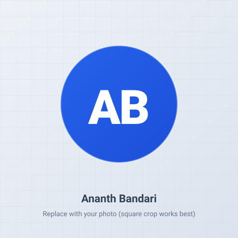

Mechanical Design & Simulation
I design parts, simulate them, and show the engineering behind each one.
I’m Ananth Bandari, a mechanical engineering graduate based in Luton, UK. I model parts and assemblies in SOLIDWORKS and validate them with Ansys — then publish the model, the reasoning, the calculations, and the downloadable source files for each project.

- Discipline
- Mechanical Engineering
- Core tools
- SOLIDWORKS · Ansys
- Based in
- Luton, United Kingdom
- Focus
- Design · FEA · DFM
About
Engineering judgement, shown not just claimed.
I hold a Bachelor of Technology in Mechanical Engineering from Malla Reddy Engineering College, and I’m completing an MSc in Project Management at the University of Bedfordshire. That combination is deliberate: I like solving the physical design problem and the process around delivering it well.
My approach to any part is the same — start from the constraints that can’t move, grow material only where a load path needs it, then prove the result with hand calculations and an Ansys study before calling it done. Every project on this site includes that reasoning in full, along with the SOLIDWORKS and Ansys files so you can open them yourself.
Alongside design, I bring hands-on experience in process optimisation, quality assurance, and training from my current role, plus a summer internship in industrial engineering at BHEL, one of India’s largest manufacturers.
Design & Simulation
Software & Data
Engineering & Delivery
See the work in detail
Each project includes the design logic, the calculations, renders, and the downloadable CAD and FEA files.